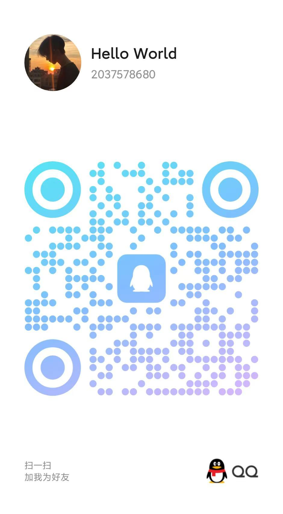

杨如斌
兰州文理学院 - 数字媒体学院
数据科学与大数据技术专业
2037578680@qq.com
扫码添加微信
微信二维码
扫码添加QQ

QQ二维码
项目经历
基于物联网的智慧农业监测与决策支持系统
通过传感器网络和数据分析，实现对农田环境的实时监测和智能决策。
HTML5
CSS3
JavaScript
Python
MySQL
物联网
数据分析
ZigBee
LORA
基于根云平台的智能生产线
对生产线进行智能化改造，实现生产过程的自动化和智能化。
根云平台
Python
Node.js
MySQL
物联网
工业互联网
基于AIOT的智能市政
基于物联网技术的智能市政管理系统，实现对城市基础设施的实时监控和智能管理
物联网
云平台
AIOT平台
Python
网站说明
本网站是我的web前端期末设计作品，主要展示岷县的文化特色、旅游资源、历史传统、特产美食、民俗风情等内容。
主要技术：
网站功能：
- 文化特色展示
- 旅游信息介绍
- 历史背景介绍
- 特产美食展示
- 民俗风情展示
- 用户互动功能
特别致谢
感谢指导老师的悉心指导
感谢同学们在开发过程中提供的宝贵建议
感谢所有为网站提供素材和帮助的人